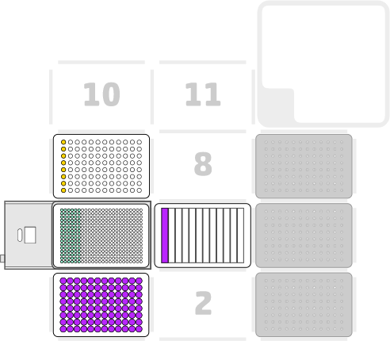

Lesley Ives
12 March 2024
OP_PD_005 v1.0
Bacterial Transformation Protocol
Description
This set of protocols carries out bacterial transformation of 384 low volume samples.
There are four separate protocols which carry out the transformation of 96 samples from a specific quarter of the 384 well plate.
Labware and Liquids

- Right mount: An 8-channel p20 pipette (GEN2)
- Slot 1: 96 well PCR plate containing out-growth media
- Slots 3, 6, 9: 20µl Tip Racks
- Slot 4: Temperature module (GEN2) with 384 PCR plate containing samples for transformation
- Slot 5: 12-channel reservoir containing out-growth media
- Slot 7: Aluminium block containing a strip of PCR tubes with competent cells in column 1
Execution
- Select the correct protocol for the set of samples requiring transformation.
- Set up the deck as described above and as in the initial protocol pause step.
- Run the protocol.
- There are various pause steps and manual steps requiring immediate interaction with the instrument.
Script
Bacterial Transformation Protocol - Script 1
Bacterial Transformation Protocol - Script 2
Bacterial Transformation Protocol - Script 3
Bacterial Transformation Protocol - Script 4
Tips and best practices
Carry out a test run of the protocol using the labware and water to ensure that the positioning of labware and tips is suitable. Re-calibration of the deck or labware may be required.
Ensure the aluminium block has been placed in the freezer prior to being placed on the deck. This will keep the competent cells cold and prevent reduced efficiency of the process.